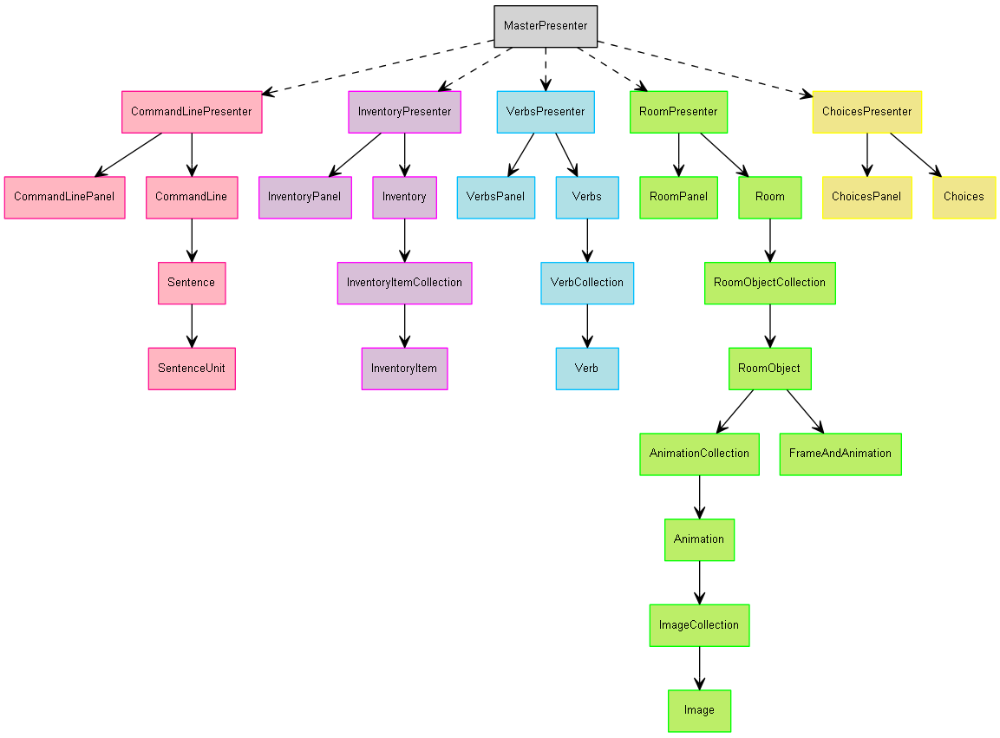
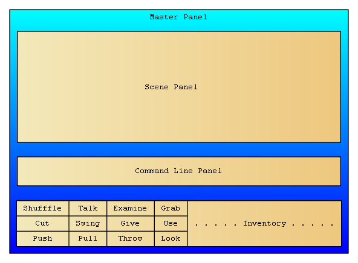

a2g.Core Documentation

|

|

|
a2g is a simple Maniac-Mansion-style adventure game-engine.
Some of it's highlights include:
- support for both online delivery via GWT and desktop delivery via Swing.
- game scripts with lots-of-static-checking, which means less errors.
- supports arbitrary-resolutions simultaneously.
- efficient loading-of-images
- efficient loading-of-scene-files.
- easy-debugging by using using standard Java debugging.